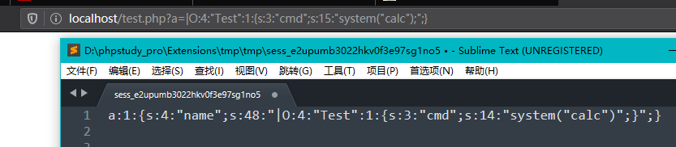

PHP反序列化小结
前言
php反序列化漏洞又叫php对象注入漏洞，是web安全中一个常见的漏洞，也是CTF常见的考点，所以就稍微整理总结了一下
序列化和反序列化
序列化是将对象的状态信息转换为可以存储或传输的形式的过程，而反序列化就是还原这个过程。就好像搬家需要把一些家具拆成零件搬到其他地方再组装回来一样。
相关函数
序列化：serialize() 把一个对象变成可以传输的字符串
反序列化：unserialize() 将字符串还原成一个对象反序列化的应用：
1、可以用序列化把数据存储到硬盘中，一般用于存储session、cookie等
2、可以实现远程通信，即在网络上传送对象的字节序列
序列化
先举一个简单的例子
1 |
|
最终输出结果
1 | O:4:"Test":1:{s:1:"a";s:9:"this_is_a";} |
- 其他字符表达式
1 | a - array b - boolean |
- 访问修饰符
- public(公有)
- private(私有)
- protected(保护)
当目标被private修饰，序列化结果为%00类名%00属性名
当目标被protected修饰，序列化结果为%00*%00属性名
举个例子
1 |
|
输出结果
1 | O:4:"Test":3:{s:1:"a";s:8:"public_a";s:7:"Testb";s:9:"private_b";s:4:"*c";s:11:"protected_c";} |
反序列化
反序列化是序列化的逆过程，把字符串还原成一个对象
1 |
|
其输出结果为
1 | Test Object ( [a] => public_a [b:private] => private_b [c:protected] => protected_c ) |
反序列漏洞
既然是注入类漏洞，那本质就是在用户可控的情况下输入一些恶意的字符串,改变程序执行的流程或操作，导致代码执行、非法读取\写入文件等。在参数可控的情况下，传入精心构造好的payload给unserialize解析时，可以达到篡改对象的属性甚至调用函数来进行攻击系统的目的。
魔术方法
PHP 将所有以 __(两个下划线)开头的类方法保留为魔术方法，它会在特定的情况下被调用。而大部分反序列化漏洞都需要利用或绕过魔术方法。
下面是常见的魔术方法:
1 | __construct 当一个对象创建时被调用， |
其中重点关注这几个
- __construct（）：当对象创建（new）时会自动调用
- __destruct（）：当对象被销毁时会自动调用
- __wakeup（）：unserialize() 执行时会检查是否存在一个 __wakeup() 方法。 如果存在，则会先调用 __wakeup方法
- __toString()：当一个对象被当作一个字符串使用
- __sleep()：对象被序列化之前触发，返回需要被序列化存储的成员属性，删除不必要的属性。
对象注入
最理想的状态是漏洞直接出现在魔法函数中，只需要特定条件就可以利用
1 |
|
因为反序列化的时候并没有过滤，导致可以控制$t的值，就可以进行XSS攻击
1 |
|

绕过__wakeup()
这实际上是CVE-2016-7124漏洞。在反序列化时，如果表示对象属性个数的值大于真实的属性个数时就会跳过__wakeup( )的执行。
影响版本
- PHP5 < 5.6.25
- PHP7 < 7.0.10
举个例子
1 |
|
因为 __wakeup函数是在调用unserialize时触发，所以shell.php的内容只能是no，需要绕过 __wakeup才能写入shell
1 |
|
POP链
面向属性编程（Property-Oriented Programing） 用于上层语言构造特定调用链的方法，与二进制利用中的面向返回编程（Return-Oriented Programing）的原理相似，都是从现有运行环境中寻找一系列的代码或者指令调用，然后根据需求构成一组连续的调用链。在控制代码或者程序的执行流程后就能够使用这一组调用链来执行一些操作
一般的序列化攻击都在PHP魔术方法中出现可利用的漏洞，因为自动调用触发漏洞，但如果关键代码没在魔术方法中，而是在一个类的普通方法中。这时候就可以通过构造POP链寻找相同的函数名将类的属性和敏感函数的属性联系起来
1 | Welcome to index.php |
Modifier类中存在文件包含漏洞，可以用php伪协议读取，需要构造一个pop链修改$value
Show类中的 __wakeup()调用preg_match函数将source进行作字符串处理时触发了 __toString()，返回$this->str->source，当str实例为Test类时，因为Test类中不包含source属性从而调用 __get，返回一个函数，如果Modifier实例化成p，刚好可以调用 __invoke，最终修改value，调用文件包含函数，再通过一次 __toString把flag读取出来
pop链: Show类 -> __wakeup -> __toString -> Test类 -> __get -> Modifier类 -> __invoke
1 |
|
session反序列化漏洞
PHP中的session是以文件的形式保存到硬盘中，其存储的文件名格式为 sess_sessionid，其内容为session序列化之后的结果
先了解一下session在php中的一些配置：
- session.save_path 设置session的存储路径
- session.save_handler 设定用户自定义存储函数
- session.auto_start 指定会话模块是否在请求开始时启动一个会话，默认为0不启动
- session.serialize_handler 定义用来序列化/反序列化的处理器名字。默认使用php
而在php中有三种序列化的处理机制：
| 处理器 | 对应的存储格式 |
|---|---|
| php_binary | 键名的长度对应的ASCII字符+键名+经过的serialize（）函数序列化处理的值 |
| php | 键名+竖线+经过的serialize（）函数序列处理的值 |
| php_serialize(php>5.5.4) | 经过serialize()函数处理过的值，会将键名和值当作一个数组序列化 |
可以看到三种处理器对应的存储格式并不是一致的，简单测试一下
1 | session.serialize_handler用来定义序列化/反序列化的处理器，当需要用到其他处理器的时候，可以用ini_set('session.serialize_handler', '处理器'); |
- 漏洞起因
当session的序列化和反序列化处理器一致时并不会出错，但是当session的序列化和反序列化处理器不一致时，因为各自的存储格式不一致，导致无法正常反序列化，通过特殊的构造方式伪造数据，从而执行一些系统命令
举个例子，test.php用php_serialize处理器来利用session (注意：php_serialize php版本必须在5.5.4以上)
1 |
|
test2.php用php处理器来利用session
1 |
|
因为采用了两个不同的序列化处理器来处理session，导致存储结构不一致，产生漏洞
新建一个use.php用来构造payload
1 |
|
use.php的输出结果
1 | O:4:"Test":1:{s:3:"cmd";s:15:"system("calc");";} |
在use.php序列化的结果添加一个 | 并传入test.php

此时再次访问test2.php就会弹出一个计算器，说明系统执行了system(“calc”)
因为test2.php会访问我们伪造的数据，而PHP处理器的格式是以键名+竖线+序列化的值组成的，使用时会把竖线前半部分的当成键名，而后半部分进行反序列化，通过伪造数据来让PHP处理器误为是要反序列化的值，最终执行eval(“calc”)
原生类利用
在没有类可以利用的情况下，可以调用PHP中原生类来进行反序列化 （以下引用l3m0n师傅的文章反序列化之PHP原生类的利用）
__toString
- Error
适用于php7版本
在开启报错情况下
test.php
1 |
|
新建use.php构造payload
1 |
|
将use.php序列化的值传入test.php的a参数造成xss弹窗
- Exception
适用于php5、7版本
开启报错的情况下
test.php
1 |
|
新建use2.php构造payload
1 |
|
将use2.php序列化的值传入test.php的a参数造成xss弹窗
以[BJDCTF 2nd]xss之光为例，利用 __toString原生类
通过.git泄露获得源码
1 |
|
没有可以直接利用的类，但是有echo，可以通过PHP原生类调用__toString方法执行XSS弹出flag
payload
1 |
|
phar的利用
PHAR（”php归档”）是PHP里类似于JAR的一种打包文件，可以将多个文件归档到一个文件，方便应用程序的打包和组件化，在PHP 5.3版本及其更高版本默认开启。在文件函数可控的情况下,利用phar://伪协议，可以在无unserialize函数的情况下进行反序列化操作
phar文件结构
phar由4部分组成（生成phar文件需要把php.ini的phar.readonly改成off）
stub
识别phar拓展的标识,格式为xxx，前面内容不限可用于伪造其他格式绕过文件上传，但必须以__HALT_COMPILER();?>来结尾，否则无法识别这个文件为phar文件manifest
压缩文件的属性等信息，其中用户自定义的meta-data会以序列化的形式存储，漏洞就出现在这里contents
被压缩文件的内容signature
签名，放在文件末尾
phar漏洞利用
测试代码如下
1 |
|
精心构造并访问exp.php页面生成exp.phar
1 |
|
然后访问 localhost/test.php?file=phar://./exp.phar，成功执行
- 参考（侵删）
https://www.cnblogs.com/ichunqiu/p/10484832.html
https://blog.csdn.net/qq_45521281/article/details/105891381
https://xz.aliyun.com/t/3674#toc-9
https://github.com/80vul/phpcodz/blob/master/research/pch-013.md
https://www.cnblogs.com/Xy–1/p/12649865.html
https://bealright.github.io/2019/08/12/PHP反序列化漏洞学习(一)